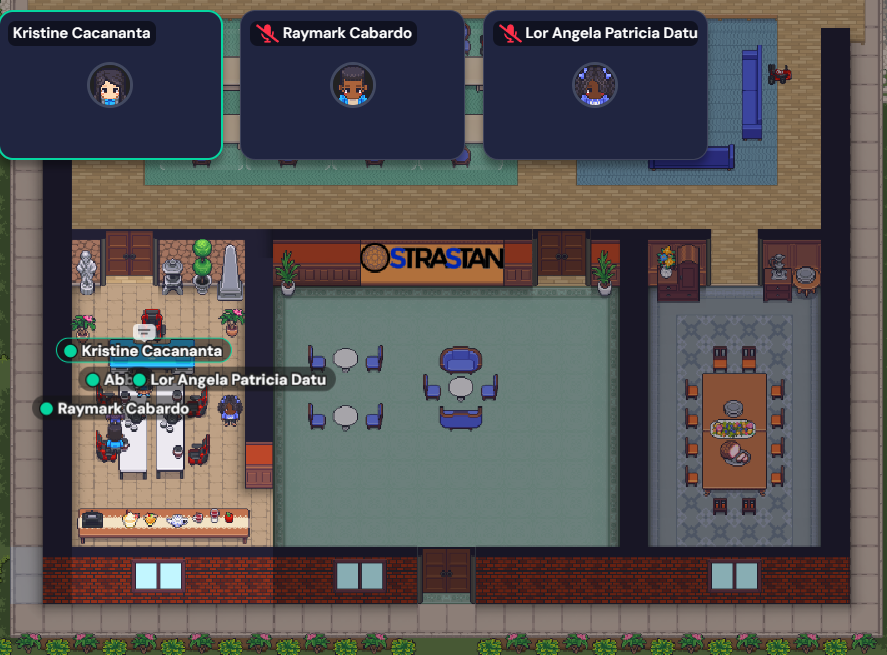
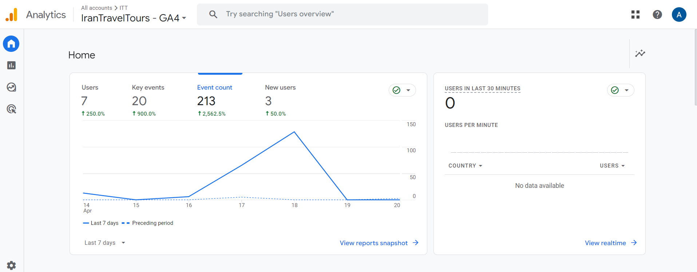
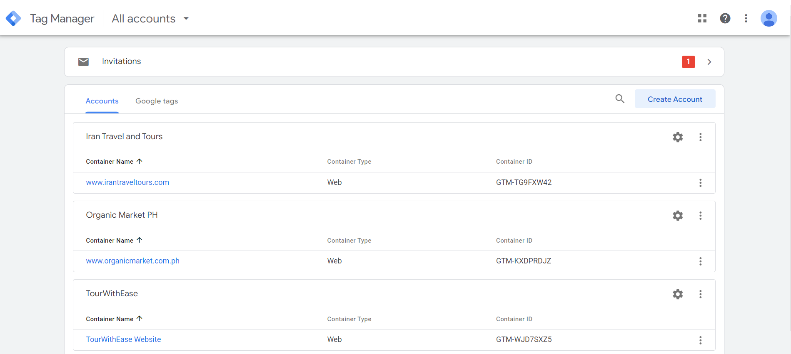

  
Since the omph is not yet done and there is so much more thing to do and i temporarily stop the configuration of GA4 and FB pixel. Sir maf and Sir ricz shift me to another website to do a same task that i did in Tour with ease and organic market. After accepting the invitation from Sir maf in GA4 and Google tag manager and FB pixel first thing i did was implementing a new GA4 for ITT. I set up data collection from the website and added essential plugins. Then, I installed and set up Google Tag Manager (GTM) to work with the site, ensuring it runs smoothly across all pages. Afterward, I double-checked to confirm GTM works well. Lastly, I added custom events tailored specifically for ITT’s needs.
The day after, I’ll create special events for Iran Travel Tours and connect website purchases to Google Analytics 4. I’ll keep checking and improving event tracking to make sure it’s correct. Also, I’ll make custom events in Google Tag Manager for Iran Travel Tours actions and set up triggers and tags to track those actions accurately.
Next, I’ll check if the custom events are working by looking at the real-time report in Google Analytics 4. Then, I’ll set up a visual funnel in GA4 to see how people buy Iran Travel Tours. I’ll also make sure our website follows data privacy laws and add a CookieYes banner for cookie consent. Finally, I’ll create different groups of people interested in Iran Travel Tours to analyze their behavior separately.
Kristine held a meeting to a new paltfom called gather, she informed us on a meeting that we will be using this platform everytime we have meeting to her. During our meeting as usual, she asked us about our progress on our task individually to put it in a gsheet form so she can send it to sir maf for our report.
On my 7 week here at strastan. I’ll use the Facebook Pixel Helper tool on Chrome to check if our pixel is working correctly. Then, I’ll go into Facebook’s Events Manager to see if all our events are tracking as they should. I’ll keep an eye on the Events Manager regularly to make sure everything stays on track. I’ll also review the best practices for integrating Google Tag Manager with Facebook Pixel to ensure smooth data transfer. Lastly, I’ll update any settings or configurations to optimize our tracking efforts.